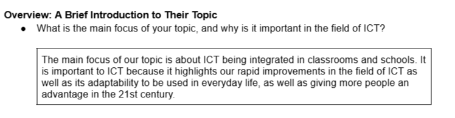

Welcome! This is the IPBA Webpage of Group 2 Lifelabs. This is where we will compile our topics that we researched during our Lifelabs subject.
Below is our topics on our selected TLE learning areas in Lifelabs.

ICT in Education
Food Manufacturing in AFA
More topics will be added onto the webpage as we go through our Q1 Lifelabs IPBA, but so far these are the topics we've tackled.
"What is ICT?"
Information and Communications, or ICT in short, encompasses the fields of technology that serve as primary tools for collaborating in projects with apps that provide real-time collaborative document updates, and communication through digital messenging tools and apps, especially in today's world.

Like we've mentioned in the picture, our topic is about ICT being integrated into schools and classrooms, showcasing the rapid advancement of ICT in the recent years, as well as its adaptability to be used not only in offices, but also in every day life and even in classrooms as well.
Now what does it mean when it "gives more people an advantage in the 21st century"? is it because of the convenience it gives, or the ease of usage, such as creating a bank account in a few clicks? well, it's a mix of both.
ICT, like most things, evolve over time, from simple webpages with text to complex layouts and floating panels, it has come a long way from when it was first discovered and researched upon in 1997.
As it evolved, it gave us more opportunities to learn and explore the digital world through wikis, forums, and websites. and in the recent years, allowed for integration into every day life, offices, and schools, which lead to the creation of the following:
And plenty more useful apps and services that can be utilized with the correct usage of the internet.
Learning to adapt and working around the internet will give you countless opportunies not just for learning and reasearch, but as well as jobs and even a chance to start up your own small buisness. but with these Benefits also come with some consequences that aren't yet solved to this day.
.png)
Internet connection is one of the biggest issues plaguing this field of ICT, as not only does it cut off access to important services, information, and websites without it, it also puts the countries without widespread internet access in a major disadvantage compared to the fast-paced world we live in today.
Besides internet access issues, one of the major issues in ICT is the lack of materials to people who's mother tongue is other than English, Chinese, or any other common language, which not only sets back their learning about the digital world due to the language barrier, but also the fact that they have to navigate deep into the internet just to find one source in their language, which may or may not even be reliable.
Some other problems for this field of ICT include, but are not limited to:
These problems pose a major disadvantage, and even danger to the people being affected the most by these problems.